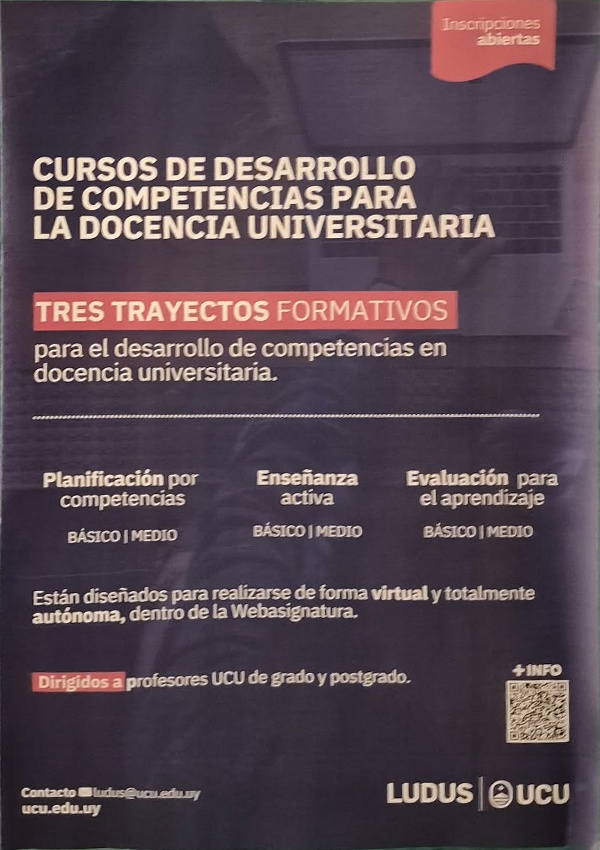
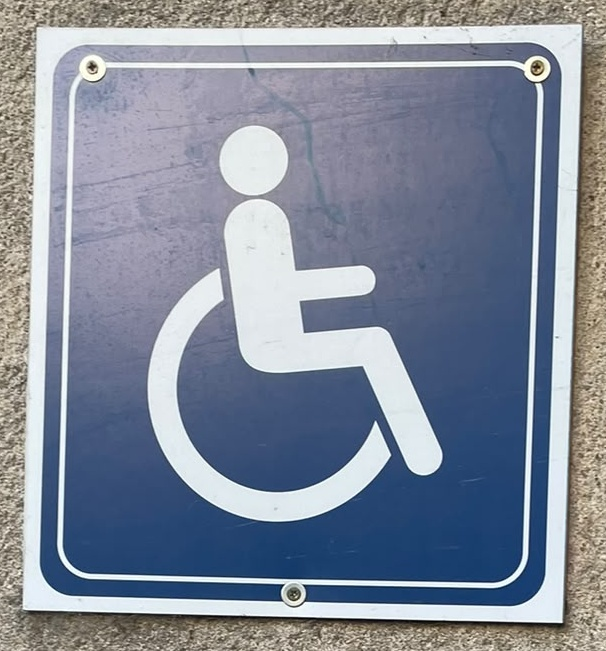
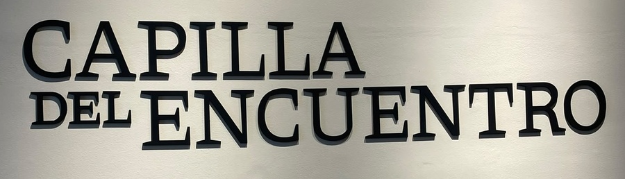

SIN IMPRESIONES NUEVAS
Tres lugares.
El mismo secreto.
El juego reconoce un póster y dos letreros que ya existen en Sacré Coeur. Las imágenes de referencia se recortaron de fotografías reales. No necesitas imprimir nada ni abrir ningún QR.

01 · BRÚJULA
Cursos de docencia · LUDUS
Piso 1 del Edificio Sacré Coeur, pasando Admisiones. Busca el póster violeta junto al letrero Centro LUDUS. Este es el punto de inicio para Bruno, Maxi y Gonzalo.

02 · LLAVE
Salida al patio
Sal hacia el patio y busca el cartel azul de accesibilidad junto a la puerta. Enfoca el cartel completo, con su borde blanco, para encontrar la llave.

03 · CRISTAL Y TESORO
Capilla del Encuentro
Sube al segundo piso. Pasando la sala Bauzá, busca el letrero «Capilla del Encuentro». Enfoca sus dos líneas completas. Reúne el cristal y pulsa Abrir el tesoro para descubrir el cofre.
Cómo probar
- Abre el juego por HTTPS en el celular. Habilita la cámara y enfoca el póster de LUDUS completo, manteniendo el teléfono quieto y evitando reflejos.
- Comprueba que aparece la brújula, el progreso cambia a 1/3 y la pista siguiente queda guardada.
- Pulsa Ir al patio. Enfoca el cartel azul y comprueba la llave y 2/3. El juego carga únicamente el reconocimiento del objetivo actual.
- Pulsa Ir a la capilla y sigue la pista hasta el segundo piso. Enfoca las dos líneas del letrero y comprueba el cristal y 3/3.
- Pulsa Abrir el tesoro para ver la imagen del cofre y el final. Pulsa Ver el tesoro en AR y comprueba el cofre sobre el letrero de la capilla.
- Cierra y vuelve a entrar para verificar la reanudación. Reinicia el progreso para el siguiente jugador.
Si habías jugado el recorrido anterior, conservas la brújula de LUDUS, pero debes encontrar la llave y el cristal en sus nuevas ubicaciones. El tiempo comienza desde cero para este recorrido actualizado.
Para una prueba inicial de escritorio, abre estas imágenes en otra pantalla y enfócalas con el celular. Eso comprueba el flujo, pero no sustituye probar frente al póster y los letreros reales, con sus luces y reflejos.
Antes de invitar a los testers
Comprueba que los tres puntos siguen visibles y accesibles, que se puede pasar al patio y al segundo piso y que las pistas permiten completar el recorrido sin ayuda del equipo. No es necesario entrar a la capilla: se escanea el letrero.
A-Frame 1.8.0 · AR.js 3.4.8 · Image Tracking NFT